Часть из задач повторяется с заметкой Теория по параметру. Это нормально, ведь объяснения происходили на примере графиков как самой наглядной интерпретации того, что происходит. Далее по тексту настоящей заметки начинаются новые, более сложные задачи. Если хотите сразу прыгнуть в новый материал, то вам в Пучок прямых.
Вводная
К сожалению, не смог найти из какого года такая задача, где-то я ее видел, но, будем, считать, что относительно недавняя (тот факт, что она из ЕГЭ - это точно, вопрос с какого года),,,
При каких значения параметра a уравнение
Имеет ровно два различных решения.
Собсна, выглядит по-другому, да, но уверяю, здесь добавилась ровно 1 маленькая деталь, о которой речь пойдет дальше. Больше отличий от ОГЭ, например, нет.
Итак, на сам параметр a пока обращать внимание не стоит, вернемся в нему позже. Начнем с простой идеи: когда дробь равна нулю? Тогда, когда числитель равен нулю, а знаменатель не равен нулю. Так и запишем:
Рассмотрим каждое по отдельности и начнем с первого. Как раз в первом нам и пригодится новый метод рассуждения: построение графика, но не , а . Он позволит нам гораздо быстрее найти нужные параметры. Построим такой график аналогично заданиям из ОГЭ( надо модуль раскрыть, там 2 графика получается, расписывать впадлу,,, ).
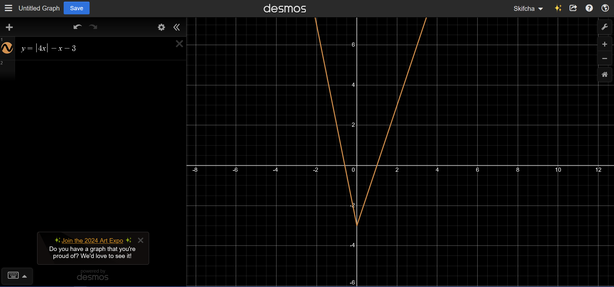
Не смотрите, что на скрине именно . Вы смело можете писать на верхней оси букву а.
Вуаля, у нас есть график . Что он нам дает? Решение задачи, конечно! Параметр а у нас может существовать только на этом “уголке” и более нигде. Однако, это не все. У нас еще условие , его тоже нужно учесть. Сделаем также: выразим а (получится ). Сие есть парабола смещенная на .
Теперь у нас есть 2 графика: один с разрешенными значениями, второй с запрещенными. Нам нужно выкинуть из первого второе и можно пить шампусик. Как? Если вы мазохист, то нарисовать (по причине того, что не всегда графики бывают столь простыми в рисовании), а если нет, то аналитически.
Мне рисовать не особо долго, поэтому вот:
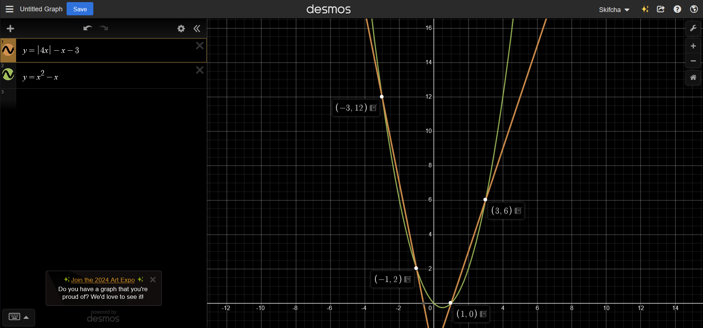
Точки пересечения этих графиков придется исключить из ответа.
Теперь попробуем прийти к этому аналитически. Нам нужно приравнять графики и , ведь они оба равны а. Причем делать это надо аккуратно, также, как изначально написано, системой:
Подставляя эти обратно в a находим те же самые точки, что и на рисунке выше.
Ответ:
Переходим к абсолютно реальной задаче ЕГЭ
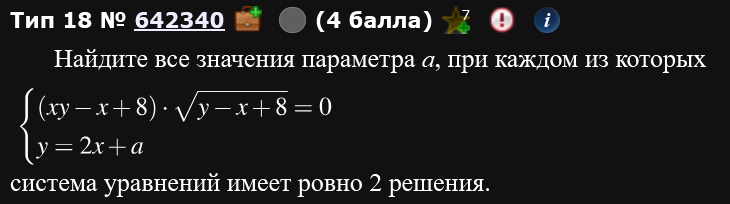
Без паники, ничего нового здесь нет.
Не вздумайте работать с поебенью выше напрямую, без преобразования.
Преобразуем первое уравнение системы:
Смотря на первые два уравнения, видим, что получилась гипербола и прямая (причем, это один график т.к. скобка квадратная). Смотря на третье уравнение видим, что оно задает условие в виде прямой: . Т.е. у нас должен быть график, который одновременно является гиперболой и прямой, причем только та часть графика, которая находится выше прямой . Выглядит это так:
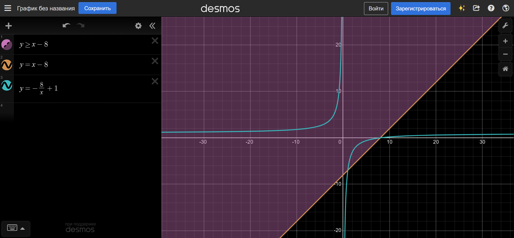
Теперь рассмотрим второе уравнение изначальной системы (уравнение ). Это уравнение задает семейство прямых , смещенные на а относительно оси Y на а.
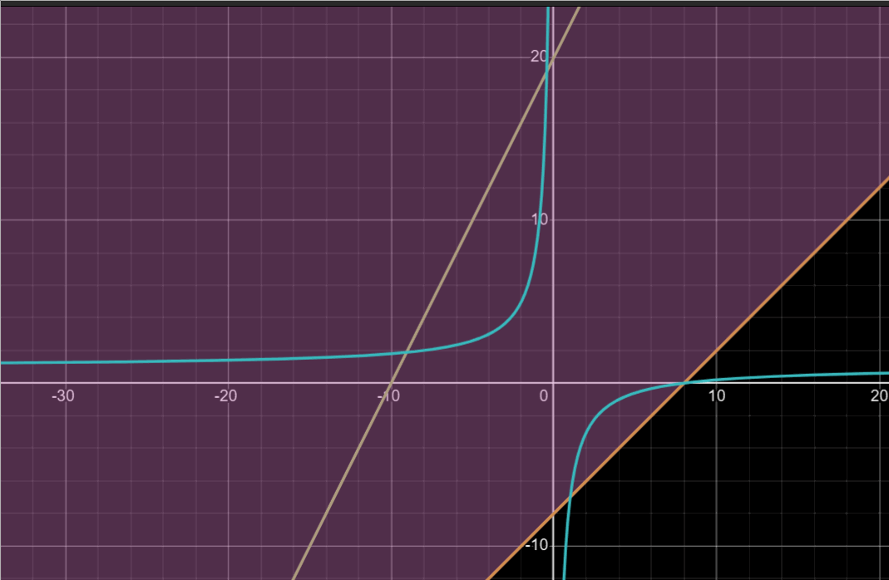
Придется рассмотреть все возможные случаи,,,
Сначала вот такой:
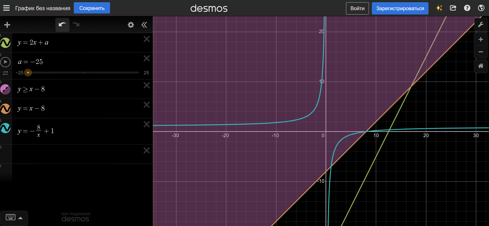
Здесь а типа сильно отрицательно. Там одно решение.
Далее:
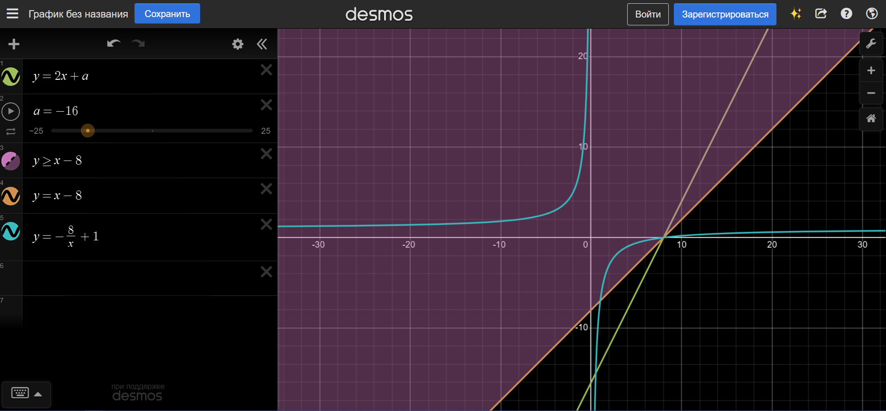
Здесь у нас все еще одно решение, а вот дальше начнется два. Благодаря DESMOS видно, что такое наблюдается при , но как это посчитать? По классике: сначала найдем точки пересечения прямой и гиперболы :
Т.е. есть две точки пересечения: и . Вуаля, мы нашли нужные нам для того, чтобы посчитать а:
Причем, такое поведение (ай мин, что 2 решения) будет наблюдаться до пересечения прямой точки (см гифку). Далее будет 3 решения до определенного момента.
Мы нашли один из промежутков ответа:
Пока что имеем вот такую картину:
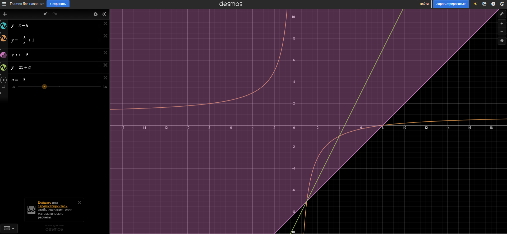
Обратите внимание: далее в каком-то диапазоне значений идет 3 корня:
А нам надобна 2 корня, так что едем дальше.
При вот таком расположении прямой снова начинает быть 2 корня:
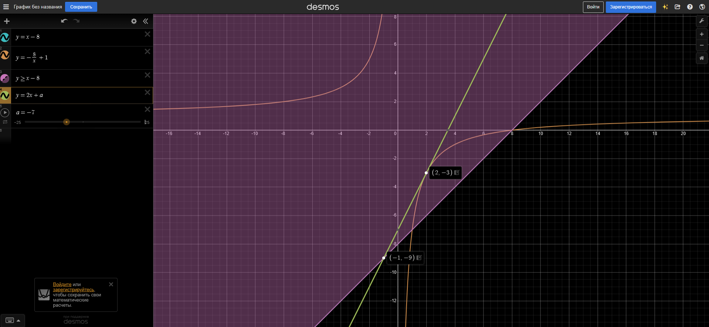
Причем видно, что автоматически пересекается с прямой . Поэтому,,,
найдем это значение а (дискриминант должен быть равен нулю, потому, что мы ищем 1 пересечение именно с гиперболой):
Причем, между этими двумя значениями а у нас одно решение.
Ответ:
Ура, мы решили первый, абсолютно серьезный параметр на ЕГЭ. Сложно ли это было? Да, местами. Однако, практика - залог успеха.
Решение подобных заданий является иллюстрацией одного из сильнейших методов решения параметров: графический метод. Однако, для того, чтобы им пользоваться требуется много практики и хорошее знание теории, поэтому не лишним будет показать другие методы (которые требуют не меньших усилий и знаний (а хуле вы хотели, параметр), однако могут быть по своей идее более понятны).
ЕГЭ 2024, основная волна, разные города
Найдите все значения параметра а, при каждом из которых система уравнений
имеет ровно два различных решения.
Нам нужно, чтобы произведение было равно нулю. Значит, либо первое 0, либо второе 0.
Первое:
Имеем что-то вот такое:
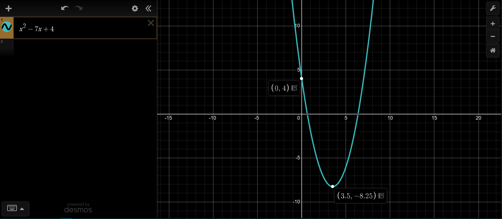
Когда второй множитель равен нулю:
Сие есть прямая:
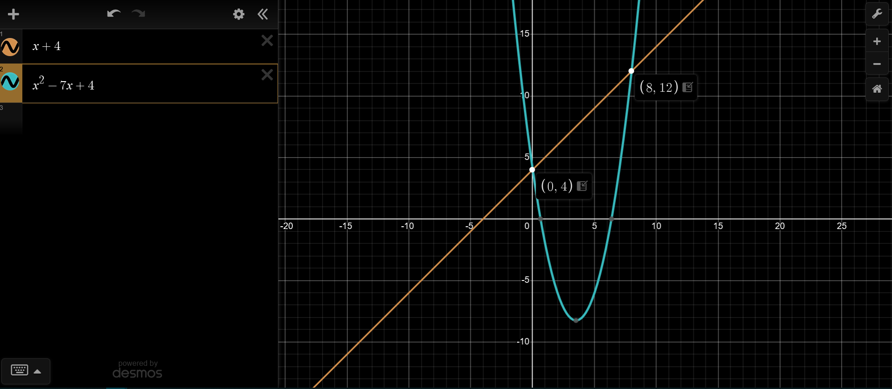
Точки можно найти приравниванием уравнения прямой и параболы.
Кста, нам похуй как выглядит график корня. Нам это не сильно важно. Нам важно, когда он равен нулю. Также, нам важно какие условия корень налагает на функцию: подкоренное выражение . Поэтому:
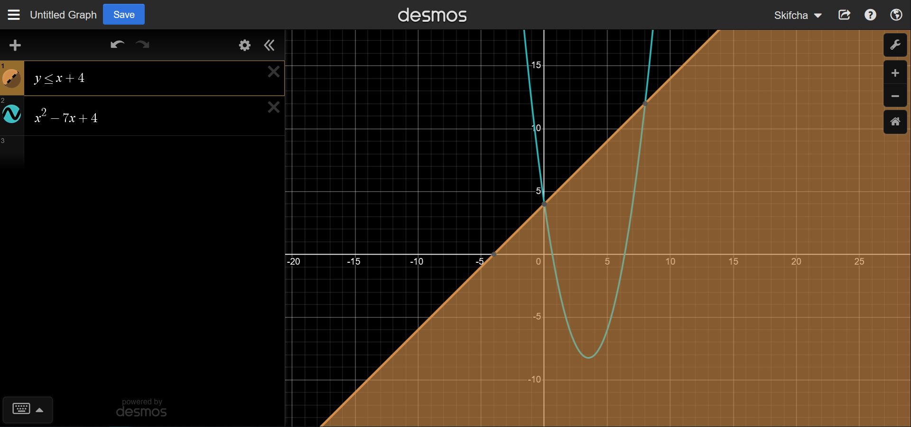
Соответственно, наш график - это прямая, на которой “висит” часть параболы.
Что касается второго уравнения - это тоже прямая , смещенная на а вверх или вниз.
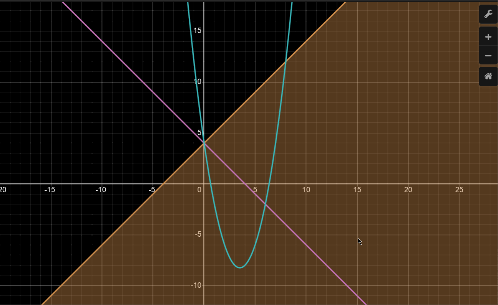
При вот таком во расположении этой прямой у нас будет 2 решения:
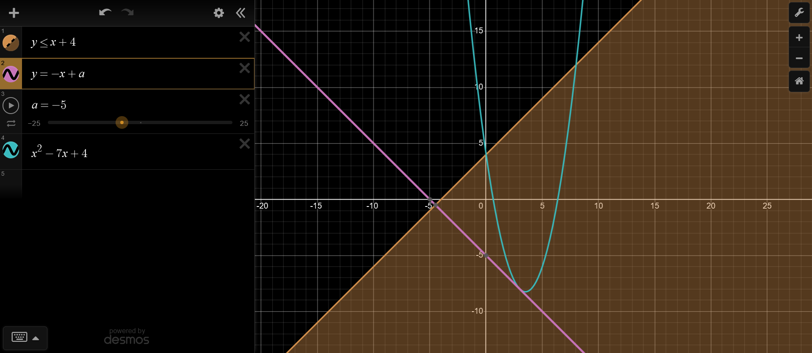
Ну т.е. когда она касается параболы.
Дальше будет 3 решения вот до этого момента:
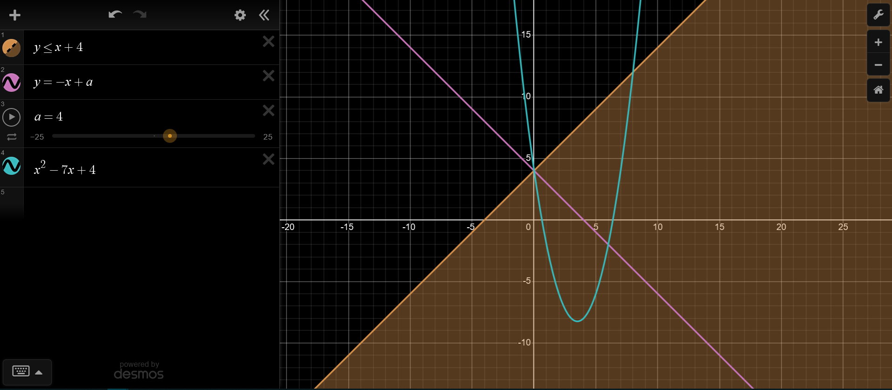
Дальше будет везде 2 решения, пока прямая не пройдет вот здесь:
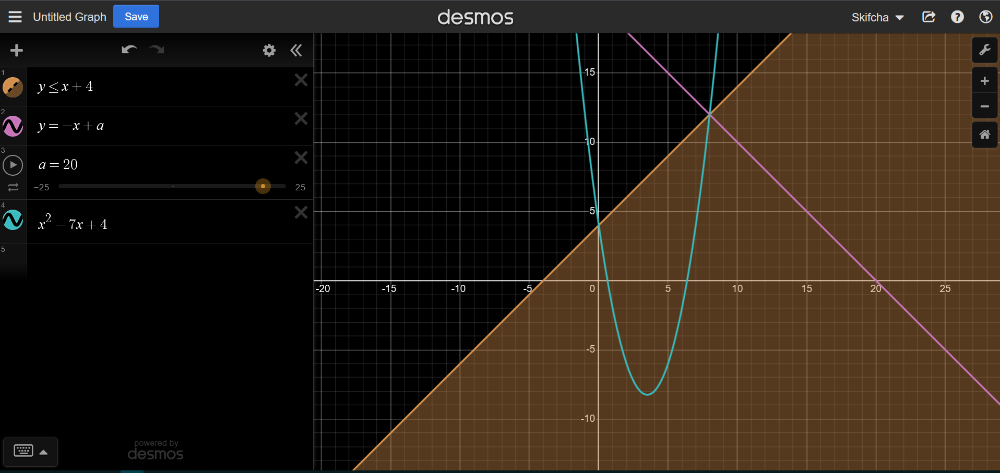
Давайте по порядку. Начнем с момента, когда прямая пересекает точку :
Теперь про прямую, которая пересекает точку :
Ну а теперь про касание к параболе. Есть два способа как ее найти: либо через производные, либо через приравнивание уравнений. Покажем оба. Начнем с производных.
Нам нужно, чтобы производная параболы в точке касания совпадала с наклоном касательной. Наклон касательной - это коэффициент перед x в уравнении . Значит, нам нужно взять производную от параболы и найти такую точку, где производная будет равна производной от уравнения прямой т.е. -1.
Подставим этот х в уравнение параболы:
Т.е. точка касания . А значит мы можем найти а:
Предположим, что мы не любим производные (ошибка). Что делать тогда? Приравнивать уравнения параболы и прямой.
Требуется, чтобы это уравнение имело одно-единственное решение (пушто касательная). Т.е. .
Вот и все, показали.
Осталось найти промежутки параметров. Ориентироваться стоит на сам график.
Ответ:
ЕГЭ 2024 и ЕГЭ 2016, основные волны, разные города
Найдите все значения параметра а, при каждом из которых система уравнений
имеет ровно четыре различных решения.
Оч хочется сократить на . Однако, для того, чтобы это сделать, нужно быть уверенным, что . Поэтому надо рассмотреть 3 случая:
Случай 1) когда
Тогда
Тогда на можно сократить
Случай 2) когда
Тогда - любой.
Случай 3) когда
Тогда
Сокращаем:
Имеем по итогу:
Получается что-то вот такое:
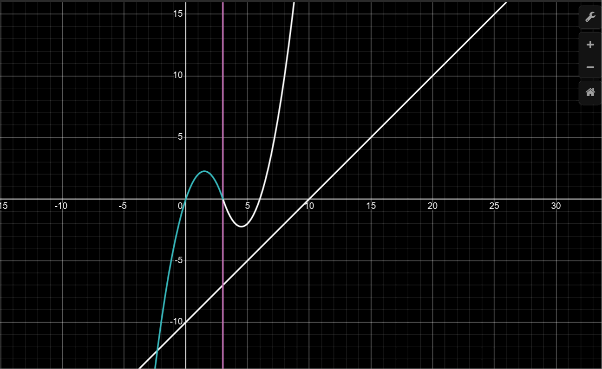
По графику видно, что нам интересны 3 случая:
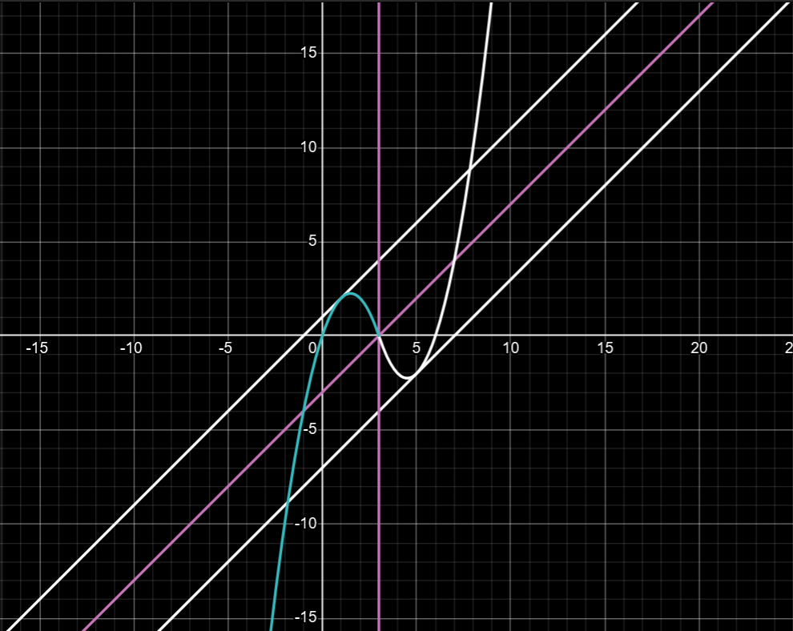
Найдем эти 3 случая. Начнем с середины. Есть прямая , при этом, если . Для разнообразия найдем обе точки разными методами: производной и подстановкой.
При . В точке касания наклон должен быть равен единице (производная от уравнения ). Тогда . Подставим обратно: . Отсюда следует, что точка пересечения: . Подставим в уравнение прямой: .
При
Осталось указать верные промежутки параметра. И все.
Ответ:
ЕГЭ 2024, основная волна
Найдите все значения параметра а, при каждом из которых система уравнений
имеет ровно два различных решения.
О, ведерко. Давно не виделись. Почему ведро?
Давайте попробуем порассуждать относительно первого уравнения. Оно равно нулю тогда, когда либо либо . Начнем с первого.
Есть 3 сценария: когда , когда и когда . Рассмотрим по порядку:
Случай 1) когда
Тогда т.е. оба модуля раскрываются со знаком +.
Случай 2) когда
В этом случае . Т.е. у нас там просто горизонтальная прямая.
Случай 3) когда
Здесь . т.е. оба модуля раскрываются со знаком -.
По итогу имеем вот такую систему:
А теперь попробуем ее нарисовать:
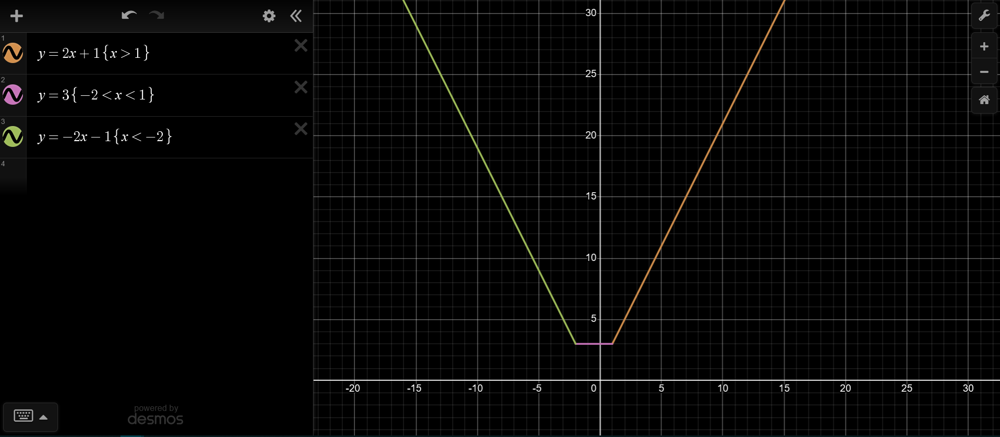
Вуаля, ведро!
На будущее найдем координаты где графики функций меняются.
Т.е. прямая и пересекаются в точке .
Аналогично - прямая и пересекаются в точке .
Рекомендую запомнить этот паттерн графиков и то как он получается - ведро довольно часто встречается в ЕГЭ.
Теперь со второй скобкой: . Такая прямая нам тоже подходит. Не забываем: прямая под корнем, поэтому . Нарисуем:
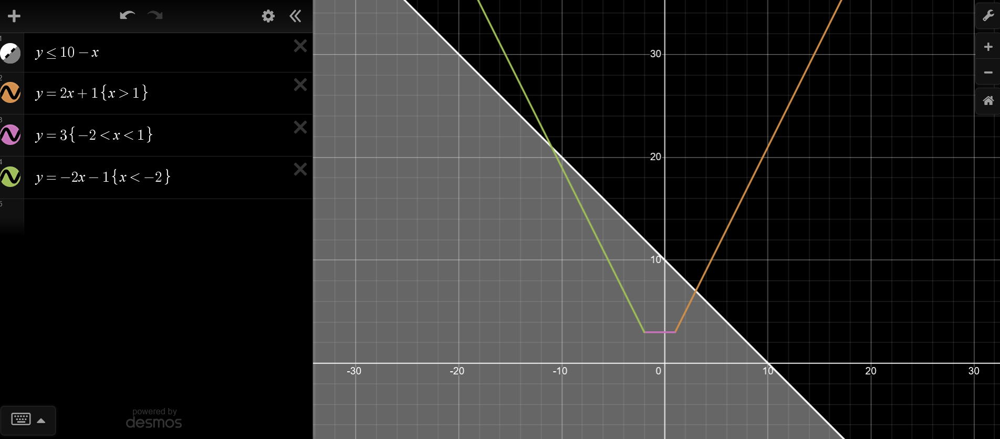
Жестко обрезали ведро.
По рисунку видно, что нас интересуют 3 положения прямой :
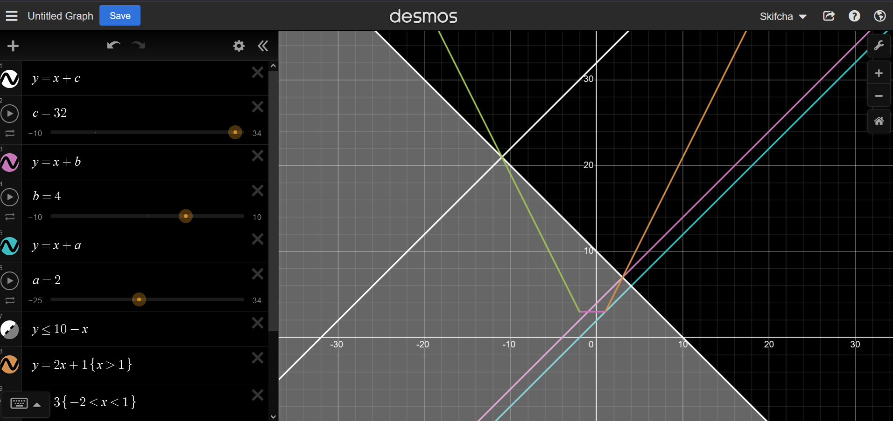
Т.е. там, где 2 решения. Осталось найти эти значения а. Прежде чем это делать уточним некоторые точки на графике.
Т.е. прямая и прямая пересекаются в точке .
Т.е. прямая и прямая пересекаются в точке .
Точки, которые нам нужны уже известны: это , и . Теперь засовываем все это в уравнение прямой , досчитываем и получаем ответ.
Ответ: .
ЕГЭ 2022, досрочная волна
Найдите все значения а, при каждом из которых система уравнений
имеет ровно три различных решения.
Что значит, что дробь равна нулю? Когда числитель равен 0, а знаменатель не равен нулю, так он еще и подкоренное выражение больше 0.
Разложим на множители:
Ну с первым понятно, это . А со вторым - это гипербола . Почему мы поделили на ? Потому, что из-за того, что если бы был, то .
На будущее найдем точку пересечения прямой с гиперболой . Эта точка будет иметь координаты .
Плюсиком, у нас еще условие о том, что . Нарисуем:
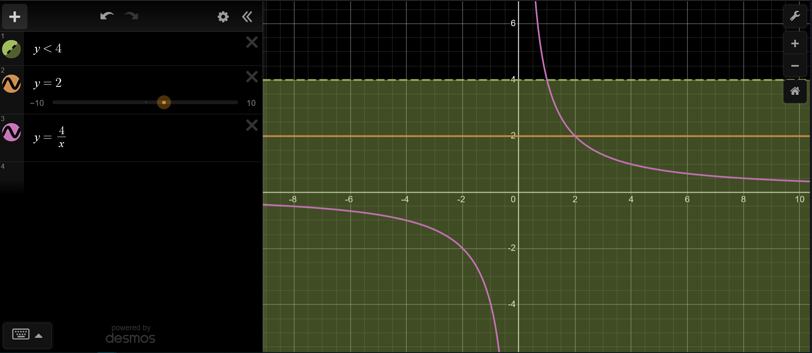
Можно найти точку пересечения зеленой прямой с гиперболой: это точка .
Теперь про второе равенство: это прямая, угол наклона которой задается коэффициентом а:
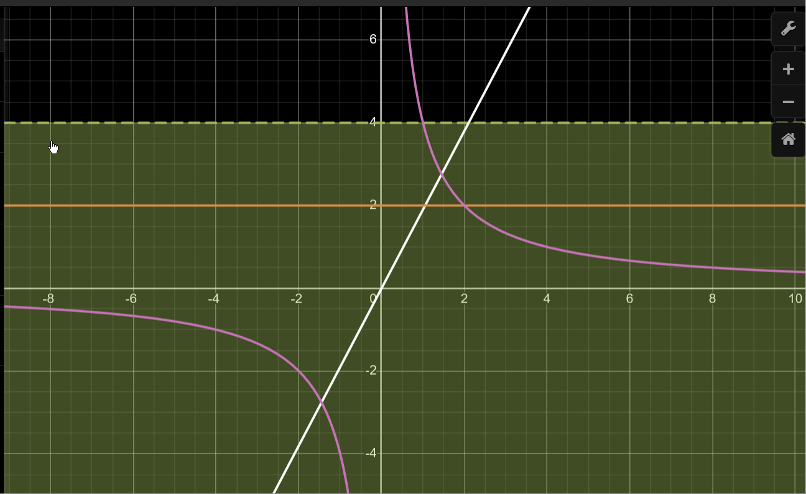
Нас интересуют 3 решения. Значит вот так:
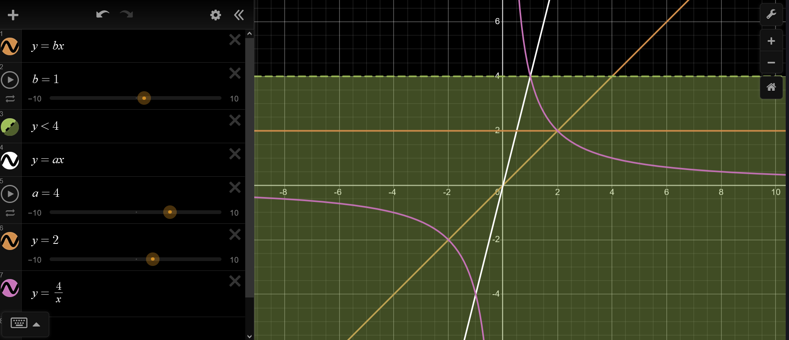
Тут не показано, однако случай тоже прикольный. Само по себе решений не имеет, однако при сразу же становится 3 решения.
Осталось найти точки. Ну, многое мы уже знаем:
Анализируем, пересекаем.
Ответ: .
Пучок прямых
Начнем с небольшого экскурса в свойства линейной функции. Назовем “пучком прямых” - множество всех прямых вида при фиксированном . Это вот такие прямые:
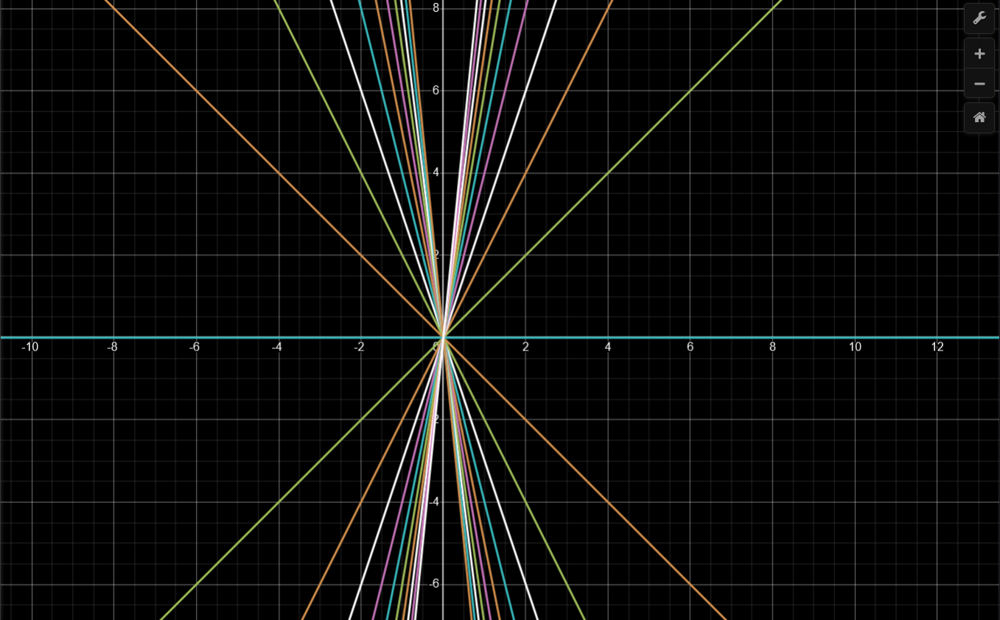
Здесь, если что, нет вертикальной прямой .
Естественно, здесь показаны не все, их бесконечно много. Если вдруг вам в ходе решения задачи встретилась такая ситуация, что вам нужно найти все прямые от какой-то фиксированной прямой до, пусть, вертикальной прямой , то, в этом случае, вы говорите, что . В случае с отрицательной прямой т.е. так: .
Давайте поупражняемся в нахождении точки “фокуса”. Например, есть вот такая прямая:
Такой график является пучком прямых с точкой фокуса в .
Теперь к первой задаче.
При каких значениях параметра а уравнение
имеет ровно одно решение?
Оп, ведерко.
Давайте скажем, что у нас есть две функции: и , где , a . Т.е. наша задача выглядит так:
В случаях, когда задача выглядит именно так ВСЕГДА нужно стараться сделать так, чтобы выразить x относительно а. Иными словами, все, что без параметра - налево, все, что с параметром - направо. Т.е. мы хотим, чтобы слева у нас был какой-нибудь фиксированный график, который можно нарисовать, а справа - семейство каких-то функций (в нашем случае - пучок прямых). В нашем случае: .
Давайте зафиксируем алгоритм работы с ведерком:
- Берется каждое подмодульное выражение, приравнивается к 0.
- Находим корень .
В нашем случае: и .
- Рисуем ось, отмечаем корни и смотрим как на каждом промежутке раскрывается каждый из модулей.
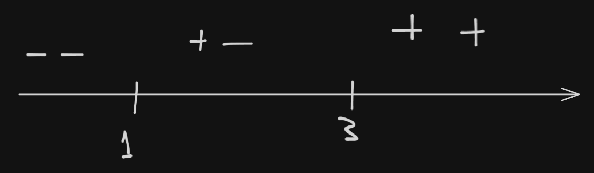
Имеется 3 куска: , и .
Раскроем все 3 случая:
Случай 1) :
Случай 2)
Случай 3)
По итогу имеем:
Нарисуем:
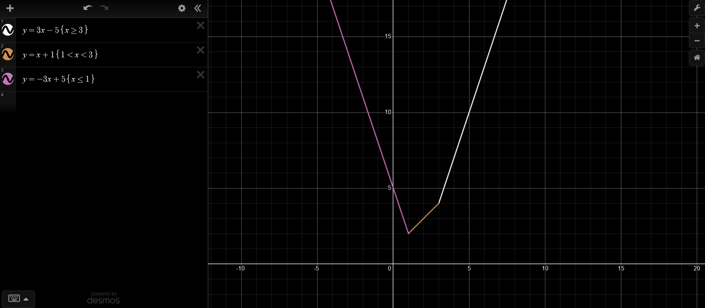
Ну а кому сейчас легко,,,
В правой части изначального уравнения у нас стоит . Тут ситуация интересная:
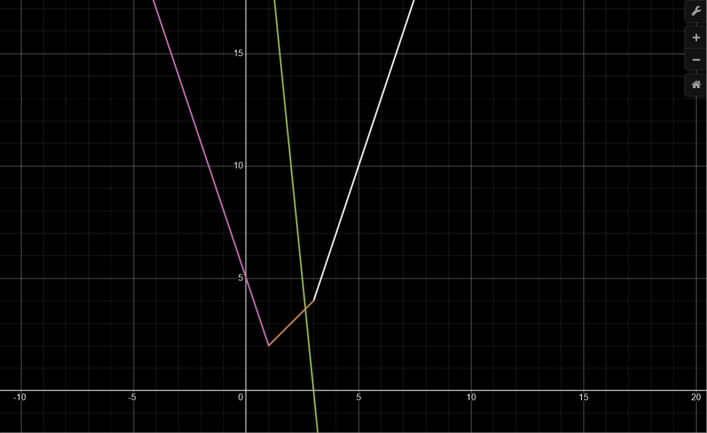
Как видно: дело дрянь. Тут надо будет считать когда зеленая прямая параллельна фиолетовой и белой. Ладно, разберемся.
Раз нам предстоят непростые рассуждения, давайте-ка найдем интересные точки: точка, когда прямая пересекает прямую , точка, когда прямая пересекает прямую . Это точки соответственно и .
Ну давайте по порядку: как минимум, есть прямая, которая пересекает точку . Она имеет с графиком 1 общую точку. Как найти такой параметр а, при котором получается такая прямая? Оч просто: это прямая из . Ну давайте подставим,,, . Стало быть, .
Поворачиваем прямую по часовой стрелке - там две точки. Вплоть до момента параллельности прямой , там будет 1 решение. Рассмотрим этот случай.
Вспоминая че такое производная: это тангенс угла наклона прямой относительно Ох или же это угловой коэффициент перед х. Вывод: когда прямые параллельны - у них одинаковые производные, а значит и одинаковые углы наклона, а значит и одинаковые угловые коэффициенты. Т.е. у прямой и прямой должны быть одинаковые угловые коэффициенты, коэффициенты перед х. Значит, .
Далее, везде 1 общая точка, далее, после вертикального положения все еще 1 общая точка вплоть до момента параллельности прямой . Давайте этот случай тоже рассмотрим. По той же логике, что и выше: .
Теперь главное правильно проанализировать результат: отсылка к пучку прямых выше. Получается, что .
Точка касания графиков
Пусть есть парабола и прямая . Предположим, вы хотите найти точку касания этой прямой с параболой. Но как?,, Приравниваем: . Если перенесем все влево - это будет квадратное уравнение . Когда у квадратного уравнения 1 корень? Когда .
Пример:
И
Задача: найти точку касания.
Где фокус пучка? В точке .
Стало быть, если - это прямая (поскольку , подставили в первое уравнение). Вторая, при , это . Т.е. есть 2 случая касательных: в точке и в точке .
Как-то так.
Еще одна
Найдите все значения параметра а, при каждом из которых уравнение
имеет единственное решение.
Аналогично предыдущему: все, что с х налево, все, что с а направо.
Пусть левая , а правая . - это пучок прямых, c фокусом в точке . - парабола под модулем. Поскольку мы теперь не на алгебре, а с графиками работаем, то, пожалуй, построим этот график.
График - это обычная парабола сдвинутая на по Оу. Модуль же “отражает” отрицательные значения функции. Т.е. вот так:
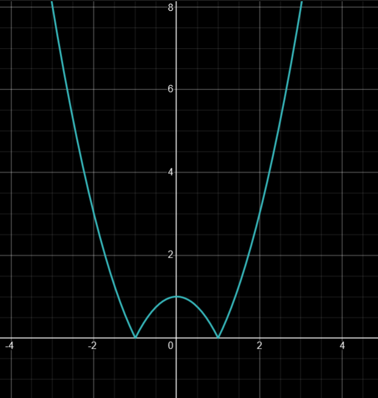
А еще есть пучок:
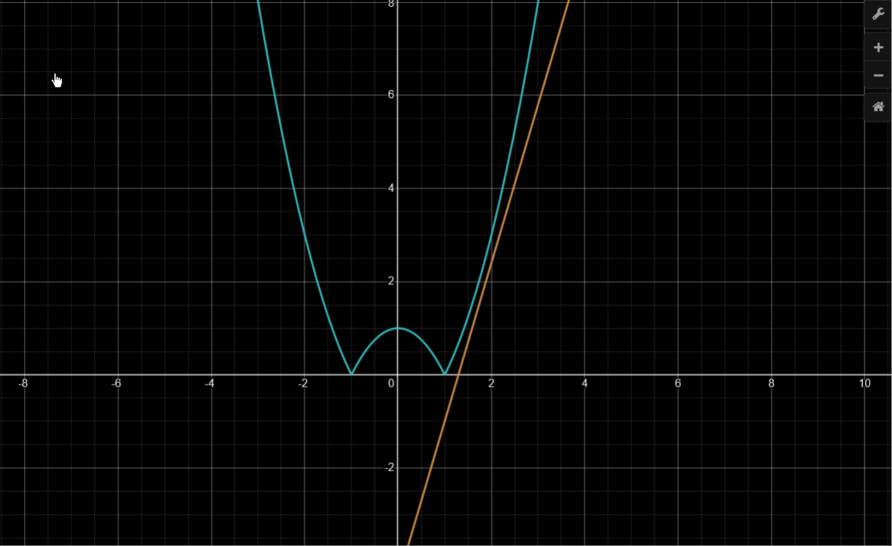
Где 1 решение? Когда прямая касается параболы справа, далее в везде 2 решения, когда прямая касается параболы слева снизу - 1 решение, далее везде в 2 решения. Т.е. наш ответ - это 2 точки касания этой прямой параболы. Найдем их.
Слева точку пересечения найти просто: левое начало “шапочки” параболы имеет координаты . Подставим в уравнение пучка: .
Теперь про касание справа. Ля прикол: нам без разницы парабола под модулем или без него, поскольку касание все равно происходит конкретно с правой веткой параболы. Поэтому найдем такое касание:
Ля прикол: мы получили 2 значения параметра. Реалити чек: какое из них нас устраивает? Если мы возьмем , то это бред какой-то, это просто горизонтальная прямая. Не устроит. Кста, а почему так? Откуда вылезло это ? Это потому, что мы искали пересечение с “мнимой” частью параболы, той, которая , а не . Поэтому берем .
Ответ:
Теперь немного про окружности
Уравнение окружности выглядит так (получается из теоремы Пифагора):
Центр окружности , радиус .
Пример:
Попробуем нарисовать. Центр в точке , радиусом она . Получим:
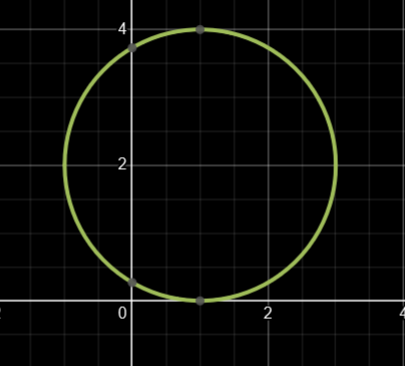
В том случае, если окружность превращается в точку с координатами .
Также полезно поговорить про выделение полного квадрата:
Как находить траекторию движения?
Предположим, есть окружность вот такая:
Следим за центром: такая окружность может быть подвижна из-за коэффициента а, которая двигает окружность вперед-назад по Ох.
Если бы было так:
Тогда центр окружности двигался бы вверх-вниз по Оу.
Наконец, если бы было так:
Координаты центра . Дальше система:
Решая систему: . Опаньки. Т.е. окружность перемещается по прямой . Разобрались.
ЕГЭ 2020
Найдите все значения параметра а, при каждом из которых система
имеет ровно два различных решения.
Оп, окружности. Давно не виделись.
Работаем с первым уравнением:
Центр , радиус .
Второе выглядит как выкидыш. Попробуем че-нить размутить.
По формуле сокращенного умножения (типа подметим окда, что справа там и , а слева и , т.е. почти разность в квадрате):
Раскроем скобки справа:
Опаньки, траектория движения. Центр .
Следовательно:
Порисуем:
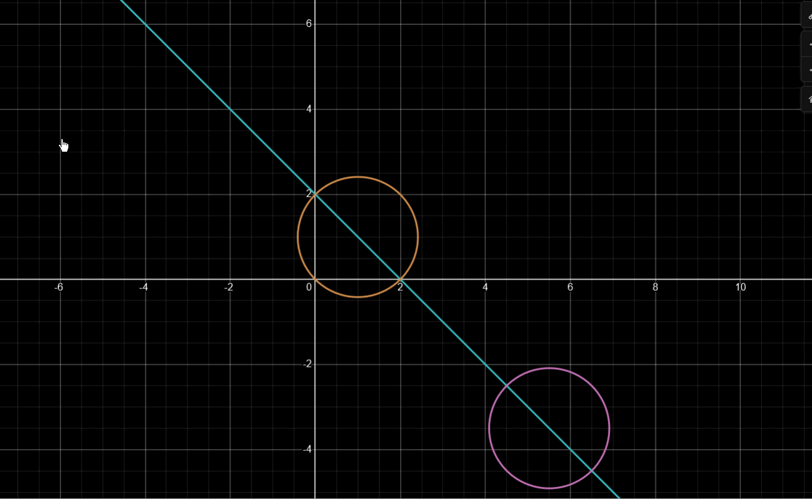
Получается, что у нас есть случай, когда окружность приехала к другой и касается ее - все, что дальше вверх или вниз имеет 2 точки пересечения ровно до момента, пока окружности не совпадут, потом снова две, а потом снова касается.
С простого: когда окружности пересекаются - у них совпадают центры. Это значит, что
Если что - это значение а нам не подходит. Крута,,,
Теперь к касаниям. Задумаемся что значит, что окружности касаются. На самом деле, это значит, что их центры расположены на расстоянии суммы их радиусов и при этом лежат на одной прямой. Если расстояние меньше, чем сумма радиусов - значит они имеют общие точки. Если расстояние между центрами окружности больше, чем сумма радиусов - они не имеют общих точек.
У наших окружностей одинаковые радиусы. Это значит, что вот такая ситуация
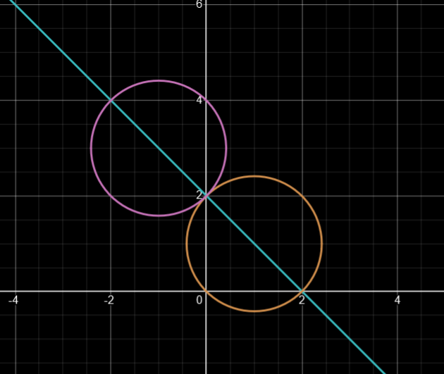
Соответствует случаю, когда между центрами окружностей расстояние равно (с нижним случаем будет все то же самое). Ну ебана, если у оранжевой окружности центр в , то у фиолетовой на 2 меньше по Ох и на 2 больше по Оу. Ента точка . Крута. Теперь засовываем эти значения в систему центра окружности, ищем параметр а:
Более того, мы уже автоматически нашли и второй случай, когда окружность внизу.
Ответ:
Прежде, чем переходить к следующей задаче поговорим о том как находить касательную к окружности.
Пусть есть какая-то вот такая окружность:
Центр , .
И пусть есть вот такой пучок прямых:
Фокус в .
Хотим найти касательные.
Способ 1) .
Т.е. подставить вместо первого уравнения зависимость от а.
Подставляем
Да, долго и муторно. Зато тупо и работает. При этих значениях а происходит касание. Оч круто.
Способ 2) Геометрический
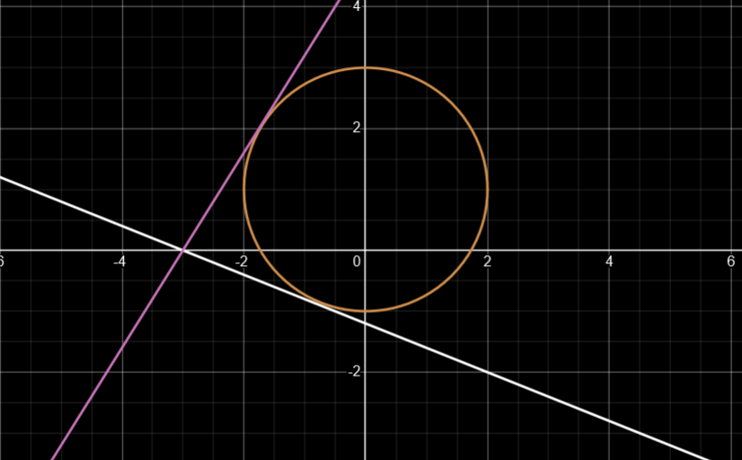
Чтобы найти точку касания надо бы найти тангенс угла наклона каждой из прямых. Сделаем это.
Давайте из точки касания опустим радиус к центру окружности. Радиус равен 2. Затем соединяем точку фокуса и центр окружности (назовем эту прямую ). Найдем гипотенузу по теореме Пифагора: . Тогда мы знаем чему равен один из катетов (отрезок, соединяющий точку фокуса и точку касания) . Обозначим угол между прямой А и самой касательной , а угол между касательной и Ох - .
Найдем синусы и косинусы этих углов.
Отсюда, искомый угол:
Во имя всех китайцев, не делайте этот способ,,,
То, что было выше - это приколы молодости,,,
Способ 3) Формула расстояния
Что значит эта формула? Если у вас есть прямая вида и при этом есть точка с координатами , то расстояние до нее вычисляется по формуле выше.
Вернемся к задаче и перенесем все, что касается уравнения прямой налево.
А теперь мы берем в качестве точки точку т.е. центр окружности.
Но ведь расстояние от касательной к центру равно радиусу,,, Опа,,,
Стало быть:
Отсюдава:
Тоже ниче простого, но явно проще, чем остальные два способа.
Найдите все значения параметра а, при каждом из которых система
имеет единственное решение.
Здесь есть эль проблема, причем довольно серьезная: как видно, меняется и координаты центра окружности и прямая (второе уравнение) и радиус окружности. И все это одновременно. Дело дрянь, рисовать нам будет очень проблематично.
Подметим: сами экзаменаторы упростили нам задачу, причем довольно сильно. Прямая и окружность либо пересекаются в 1 точке (имеют 1 решение), либо пересекаются в 2 точках. Других вариантов нет. Стало быть, нас интересует вариант только касательной. А значит, нас спасет формула расстояния.
А еще есть пара случаев, заслуживающих внимания:
Давайте проверим при т.е. просто подставим в первое и второе уравнение изначальной системы:
Если нигде не возникнет кринжа - значит подходит. Проверим возникает ли кринж. Хотя, тут уже частично кринж, ведь окружность стала точкой.
Из первого получаем координаты центра . Подставим во второе:
Получили ложь. Следовательно, не подходит. Т.е. прямая проходит где-то в другом месте.
Наконец, третий случай . Вот теперь мы утверждаем, что это окружность.
Применим нашу формулу расстояния и отдельно выпишем еще разок прямую из условия:
Центр окружности из условия находится в точке . Радиус равен .
Оба значения подходят под условие, что .
Ответ: .
Найдите все значения параметра а, при каждом из которых уравнение
имеет единственное решение.
Действуем как и до этого: все, что с х, если возможно влево, остальное, с а, направо.
Пусть , . Причем - это пучок прямых с фокусом в .
Давайте проанализируем второй график.
Причем ОДЗ писать не надо, поскольку мы возвели в квадрат, а квадрат сам по себе положительный либо ноль. Причем, не может быть отрицательный, он ведь равен корню. Поэтому напишем условие .
Очевидно, это окружность. Полный квадрат:
Центр в , радиус .
Вот теперь можно порисовать:
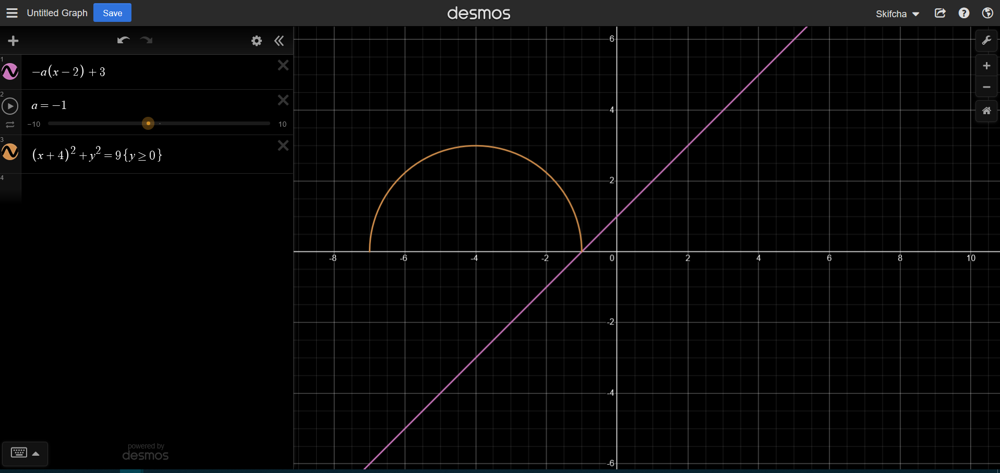
Одно решение очевидно: (горизонтальная прямая). Двигаемся дальше по часовой - везде одна. До момента пока прямая не пересечет левую границу полуокружности. У нас есть конкретные точки для того, чтобы находить значения параметра.
И третий случай:
Ответ: .
Найдите все значения параметра а, при которых уравнение
имеет ровно три решения.
Изучим новый метод: метод хОа.
Если возможно, то для этого метода нужно выразить вот так: .
Из первого:
Видим, что это парабола в координатах хОа, с вершиной в точке .
Из второго:
Это у нас галочка, с вершиной в точке .
Найдем точки пересечения:
Раскроем модуль.
Теперь в осях хОа нарисуем эти графики.
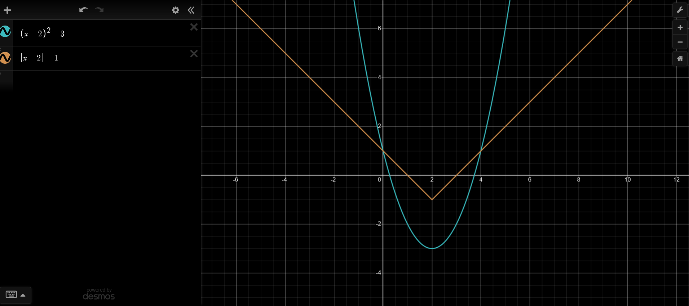
Прелесть этого метода в том, что в осях хОа у нас уже нарисовано такое множество точек, которое точно соответствует решению. Т.е. оба графика - это решения с координатами . Т.е. по сути, вопрос задачи можно переформулировать так: при каких значениях по а будет 3 штуки х? По сути, мы только что свели задачу ЕГЭ к задаче ОГЭ. Давайте смотреть,,,
Выше пересечения - везде 4 точки. в пересечении - две точки. Ниже до момента вершины галочки - тоже 4 точки. В вершине галочки - 3 решения. Ниже - 2 или 1 или ни одного. Т.е. нам подходит только то значения а, где вершина нашей галочки. Но ведь мы уже нашли эту точку выше - это .
Получается, что ответ: .
Найдите все значения параметра а, при каждом из которых уравнение
имеет ровно один корень на отрезке .
Опаньки, дробь. тут нет вообще. Т.е. мы сразу думаем о методе хОа, при этом не забываем когда дробь равна нулю.
Первое:
Второе:
А вот эта хуйня:
Опаньки, это окружность с центром радиуса в координатах хОа. Но у нас там равенство было у окружности, а тут неравенство. Ниче страшного, это значит, что вот так:
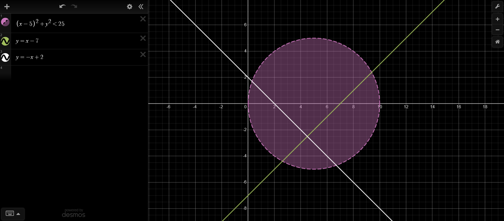
Надо понимать, что окружность - это не множество точек, а скорее область допустимых точек на прямых.
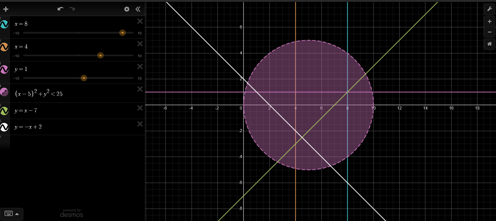
Здесь будет довольно много значений а. Сверху вниз: когда фиолетовая прямая пересечет голубую (). Далее везде одна точка до момента пересечения белой прямой и фиолетовой . Далее две точки до момента пересечения прямых . Далее опять две точки пока зеленая не пересечет оранжевую (). Далее один корень пока не выйдем из окружности (поскольку уравнения не особо замороченные, то можно просто подставить ). Первая точка х - это верхняя точка пересечения белой прямой и окружности - вторая, нужная нам, нижняя. Подставим этот х в уравнение для а и найдем а: .
Ответ (главное не запутайтесь как и что и где): .
ЕГЭ 2021
Найдите все значения а, при каждом из которых уравнение
имеет ровно два различных корня.
Я предлагаю перенести 2 направо и рассматривать:
Заметим, что у модуля нет параметра, их будет довольно легко раскрыть. Давайте это и сделаем.
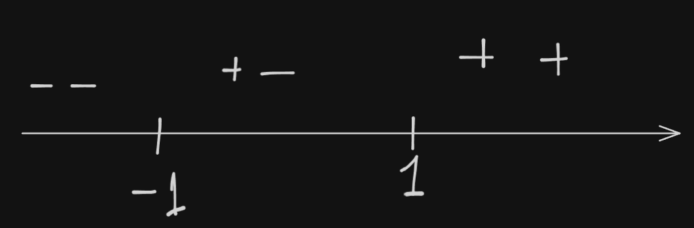
- Если (оба модуля с +).
- Если (первый с плюсом, второй с минусом).
- Если (оба модуля с -).
По итогу имеем:
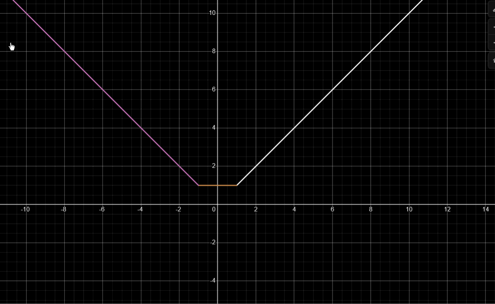
Пиздец ее корежит, , ,
Случай 1) когда (прямая из второго уравнения возрастающая)
Давайте подставим граничные точки и поймем приблизительно как выглядит график. При первое уравнение преобразуется в . Значит рисовать начинать надо именно оттуда (положительное это число или нет - это не важно). Причем эта же точка получается, если подставить во второе уравнение . Т.е. там они соединяются. Крута.
Подставим во второе уравнение . Получится . Опять же, без разницы положительное это число или нет.
Ну и наконец, подставим в третье уравнение. Получится .
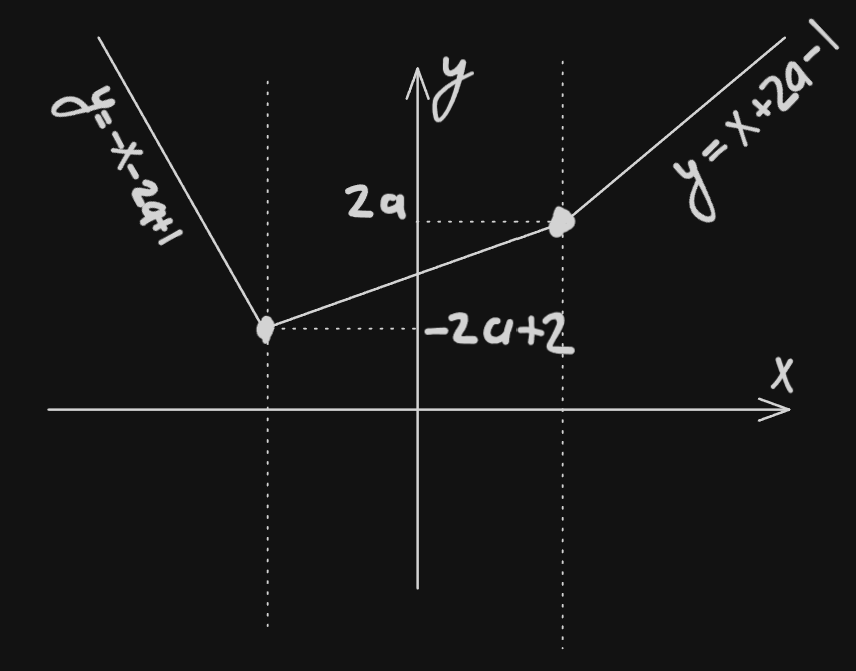
А теперь вспоминаем вопрос: нам нужно, что эта хуета имела две точки пересечения с прямой .
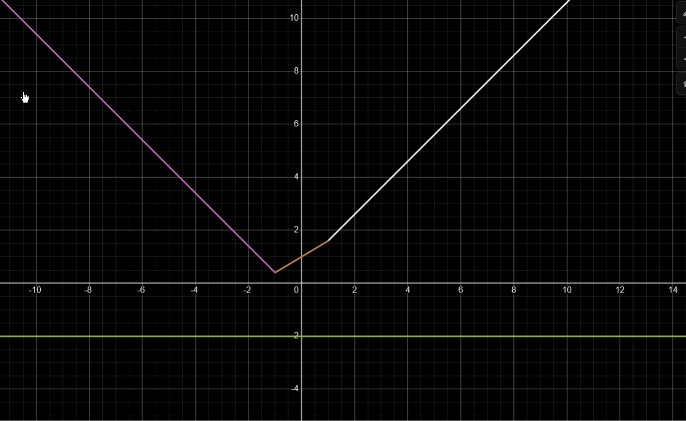
А г а , , ,
А давайте из соображений графика вот так сделаем:
Не забываем, что еще есть условие . Пересечем. Получится . Это часть ответа.
Случай 2) когда .
Все наоборот.
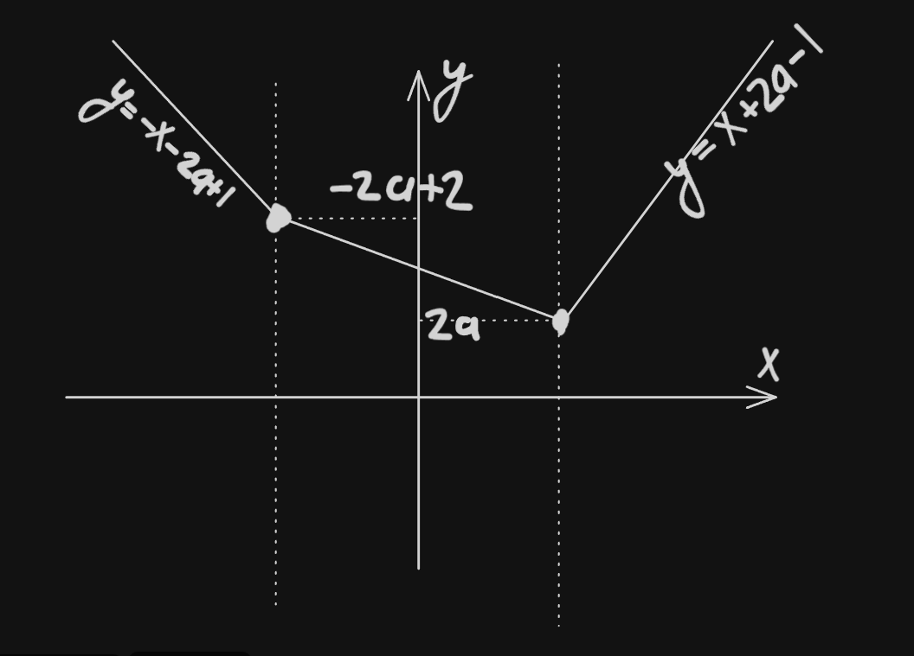
Т.е. теперь самая низкая точка - это . Т.е. . Это тоже часть ответа.
Случай 3) .
В этом случае у нас ровное дно ведерка. В этом случае нет решений.
Ответ: .
Найдите все значения параметра а, при каждом из которых система
имеет три решения.
ЕГЭ 2022, досрок.
Второе уравнение - это пучок прямых с фокусом . По сути, единственное, что требуется - это как-то изобразить верхнее множество.
. Можно подставить в изначальное и проверить, что он не является решением.
Кстати, в знаменателе корень, не забываем про ОДЗ:
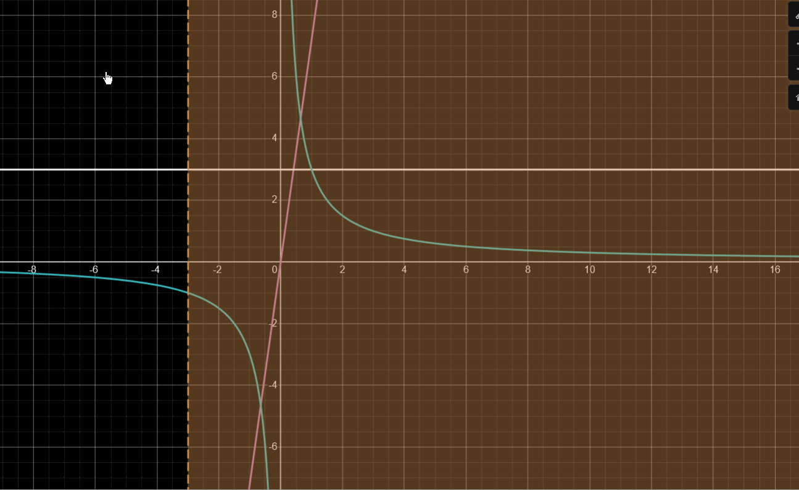
Найдем точки пересечения прямой и прямой . Проблемка: мы х не знаем. Не беда. Эта же точка - точка пересечения гиперболы и прямой . Найдем оттуда x:
И подставим его в :
Вуаля, нашли а. Видно из построения: все, что больше нам подходит. С до пересечения вертикальной прямой и прямой - везде 3 решения. Т.е. до точки . Далее - везде не подходит.
Ответ: .
Найдите все значения параметра а, при каждом из которых система уравнений
имеет ровно два решения
Выглядит по-настоящему отвратительно.
Первое - окружность фиксированного радиуса, движется по некоторой траектории. Центр в .
Полученное уравнение - уравнение траектории движения окружности. .
Воспользуемся формулой расстояния, но немного другой.
Выводится из теоремы Пифагора.
А теперь пиздец прикол,,,
Уравнение в точности имеет вид расстояния между двумя точками,,,,,,,,,,,
О п а , , ,
Ну т.е. есть точка и где-то есть абстрактная точка с координатами . И вот первое слагаемое - это расстояние между ними. Вон оно че. Со вторым слагаемым тоже самое: точка с координатами и та же самая абстрактная точка . Расстояние между ними - это второе слагаемое. А какое расстояние между точками и ? Так это же,,, .
Это пиздец.
Ну т.е. длины двух отрезков и в сумме равны .
Вообразим ситуацию: . Это треугольник. И при этом, по неравенству треугольника: . Когда это будет работать? Только тогда, когда точка B лежит на отрезке АС. Т.е. второе уравнение тупо задает отрезок АС. Причем лежит он как и равен он . Ну тогда это просто прямая .
А радиус окружности из первого уравнения . П о л о в и н а о т р е з к а , , ,
Т.е. нам подходит только один случай: когда окружность находится четко в центре отрезка. Учитывая, что у нас, по сути, есть равнобедренный прямоугольный треугольник, катеты которого по 10, а гипотенуза , то посередине гипотенузы - это 5. А т.к. , то .
Ответ: .